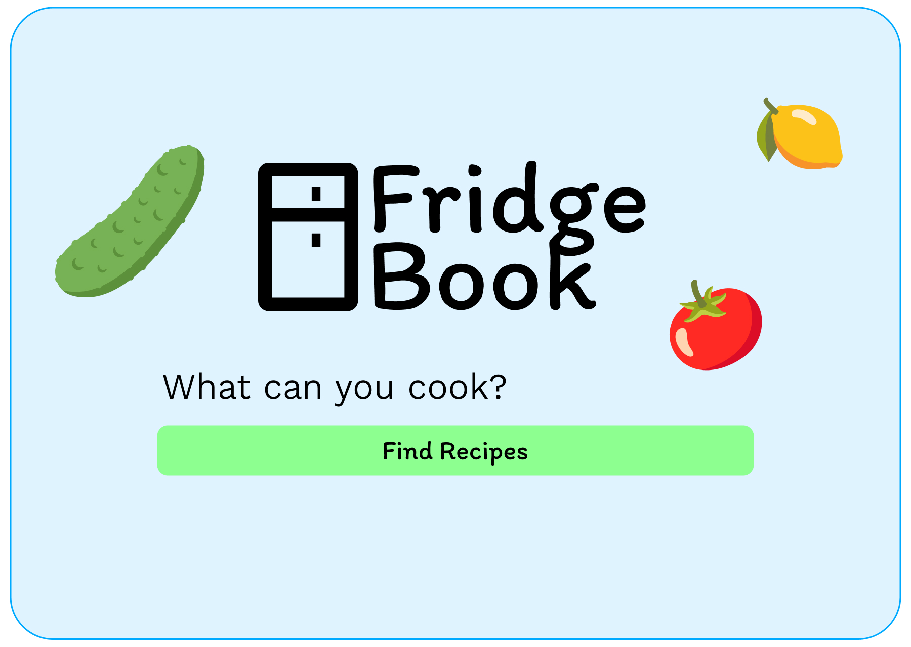

FridgeCook
Recipe app from fridge
ingredients to a meal
About
FridgeCook matches recipes to ingredients you already have. I built it to practise React and TypeScript on a complete UI: routing, authentication, remote data, and a layout that works on phone and desktop.
Role
Frontend developer. UI designed and coded by me.
What I built
Nested routes with React Router (home, cookbook, recipe detail, favorites, login). Custom hooks for recipes, favorites, and auth. Supabase for sign-in and saved data; localStorage when logged out. Ingredient matching on the client. Desktop navigation and a mobile hamburger menu.